SIP / IMS
SIP and IMS Study Guide
A visual guide for telecom engineers: SIP messages, call flows, SDP, RTP, IMS and VoLTE.
Prefer to read offline?
The complete guide as one PDF: 72 pages, 5.6 MB. The earlier text-only notes are still available here.
1. SIP Basics
What SIP is, what it is not, and the elements of a SIP network.
1.1What SIP does
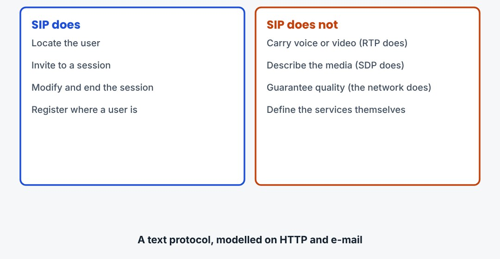
SIP, the Session Initiation Protocol, sets up, changes and ends sessions between users. A session is usually a voice or video call. SIP finds the other party, agrees that a session should exist and tears it down. It does not carry the voice itself and it does not describe the media. Other protocols do that.
1.2Three protocols work together
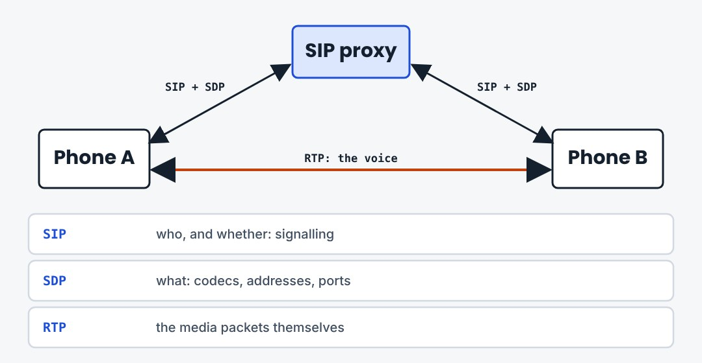
A call needs three protocols. SIP carries the signalling. Inside the SIP message body, SDP describes the media: codecs, IP addresses and ports. Once both sides agree, the voice flows as RTP packets, usually directly between the endpoints and not along the signalling path.
1.3User agents
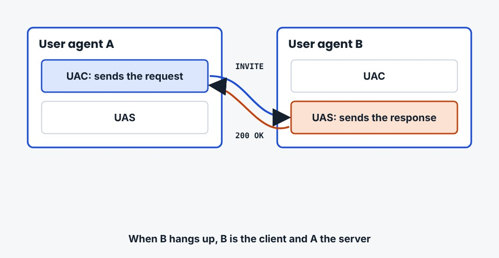
The endpoints are user agents. Each has two halves. The user agent client sends requests and the user agent server answers them. A phone is a client when it calls and a server when it is called. The roles last for one transaction only.
1.4Servers in the network
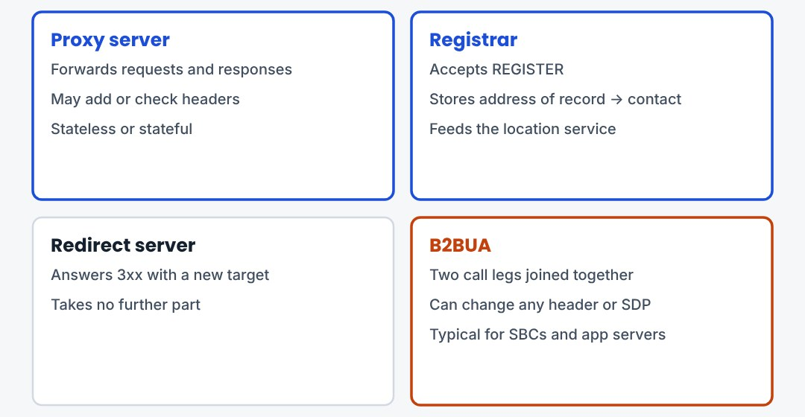
Between the user agents sit servers. A proxy forwards requests towards the destination. A registrar stores where each user can currently be reached. A redirect server answers with a new address instead of forwarding. A back-to-back user agent ends one call leg and starts another, which gives it full control.
1.5SIP addresses
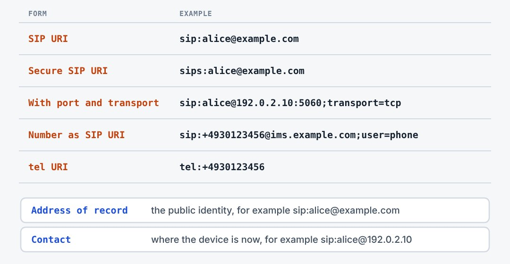
A user is named by a SIP URI, which looks like an e-mail address. The address of record is the public, stable name. The contact is the device where the user is right now. Registration binds the two. Telephone numbers are written as tel URIs or as SIP URIs with a user=phone parameter.
1.6The SIP trapezoid
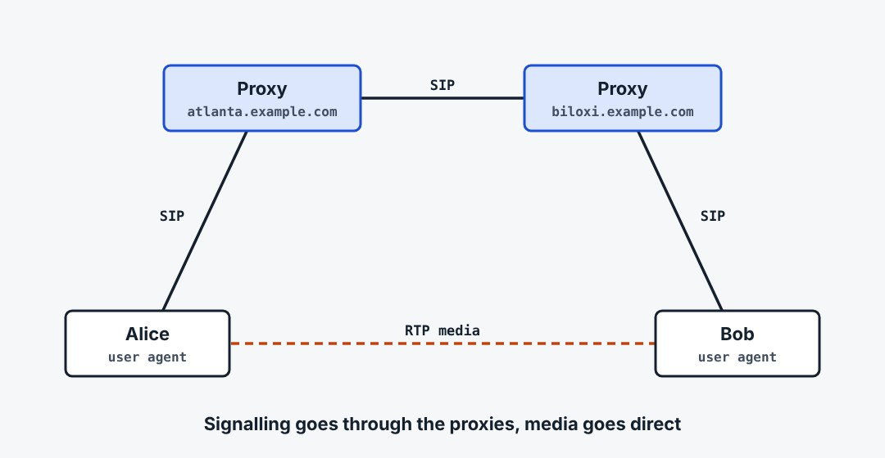
The classic picture of a SIP call is a trapezoid. Each user sends requests to the proxy of its own domain. The two proxies talk to each other. Once the call is set up, later requests and the media can go directly between the two phones.
1.7Request and response
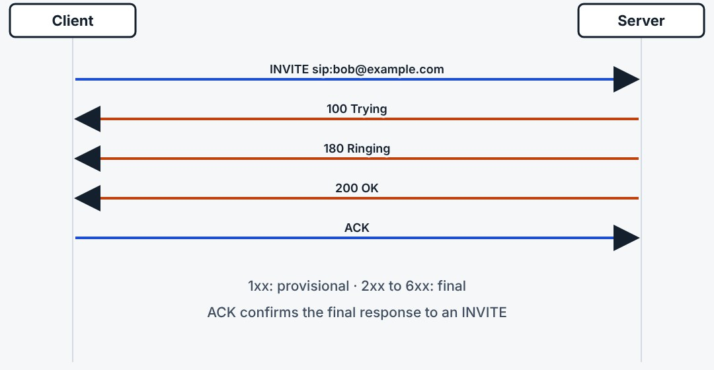
SIP works like HTTP. A request names a method and a target. The answer is a response with a three digit status code. A request, all its provisional responses and its final response form one transaction. A whole call consists of several transactions.
1.8Three things to remember
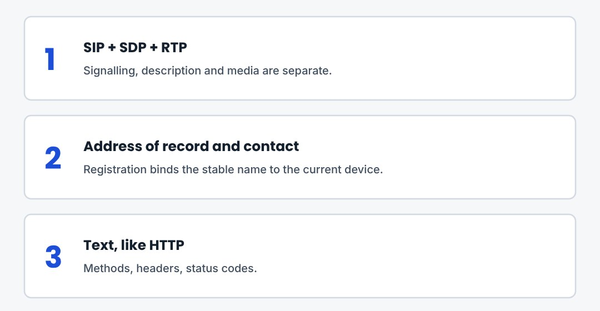
SIP sets up sessions, SDP describes them, RTP carries them. Users are reached through proxies and a registrar. Everything is request and response.
2. SIP Message Structure
How to read a SIP message: start line, headers, body, and the methods.
2.1Anatomy of a message
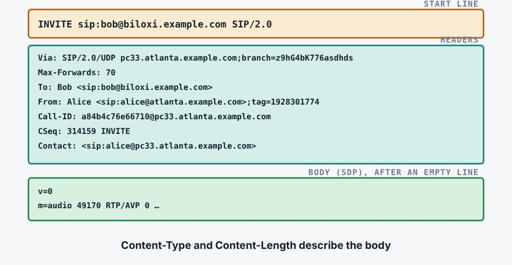
Every SIP message has three parts. The start line says what the message is. The headers carry routing and identification. After an empty line the body follows, most often SDP. Requests and responses differ only in the start line.
2.2Request line and status line
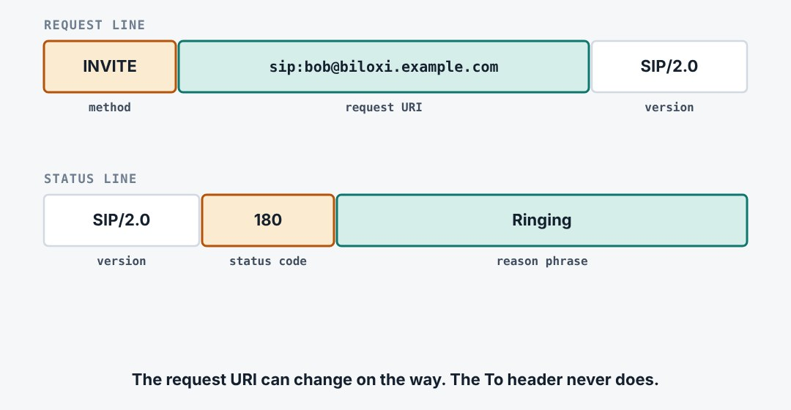
A request starts with the method, the request URI and the version. The request URI is where the message should go now, and proxies may rewrite it. A response starts with the version, a status code and a reason phrase. Only the code matters, the phrase is for humans.
2.3The six headers every request has
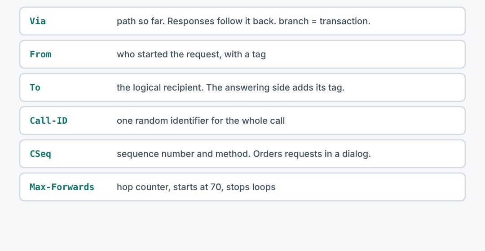
Six headers are mandatory in every request. Together they identify the transaction and the dialog and prevent loops. When you open a trace, these are the first ones to look at.
2.4Headers for routing
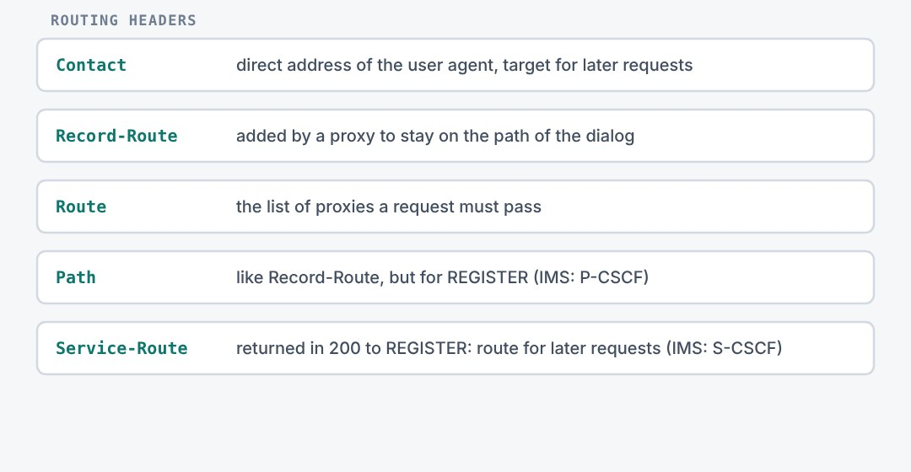
A second group of headers controls where later messages go. Contact gives the direct address of the sender. A proxy that wants to stay in the path adds itself to Record-Route. The endpoints copy that list into Route headers of every later request in the dialog.
2.5The methods
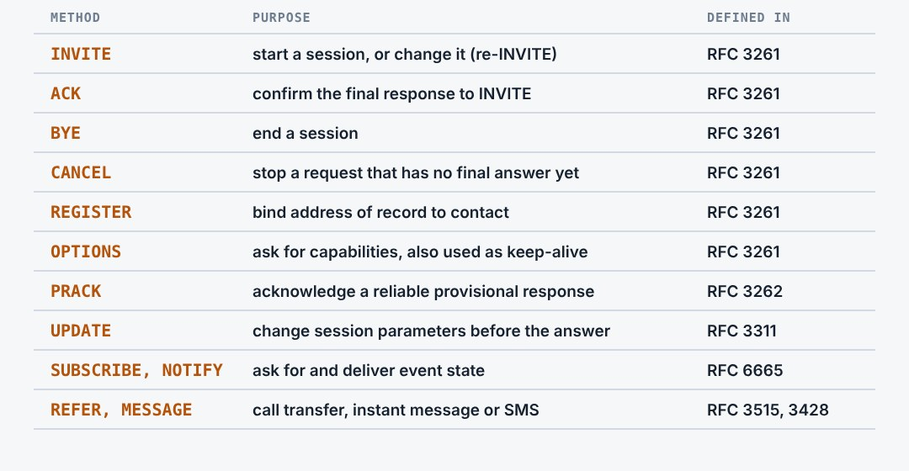
The base specification defines six methods. Extensions added more. In a VoLTE trace you will meet almost all of them. INVITE is the only method that is answered with a three-way handshake.
2.6How Via and branch work
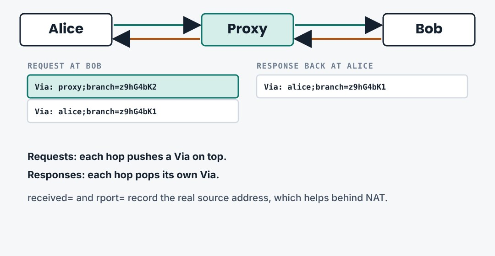
Each hop adds its own Via on top before it forwards a request. The response carries the same list, and each hop removes its own entry and sends the response to the next one. The branch parameter starts with z9hG4bK and identifies the transaction at that hop.
2.7Compact forms and P-headers
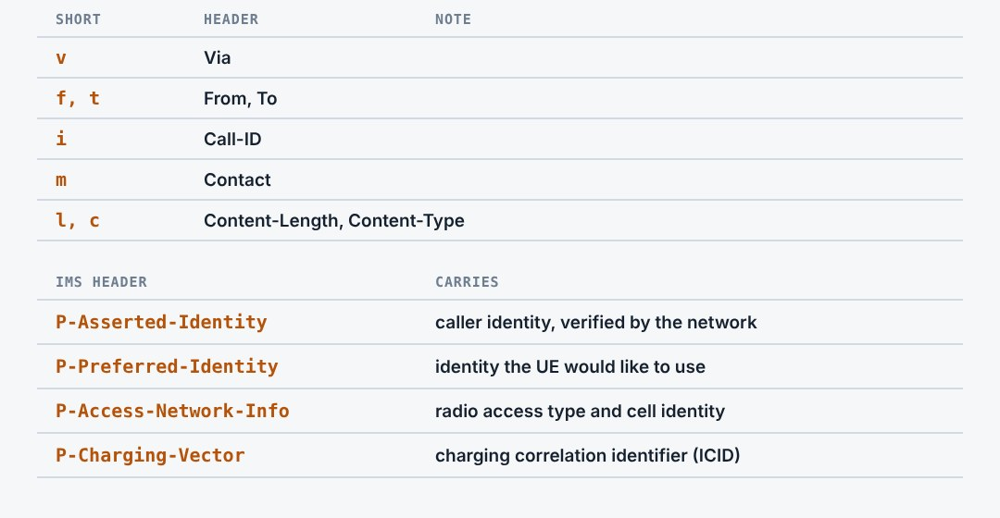
Header names have one-letter short forms, used to keep messages small. IMS adds its own private headers, which carry what the mobile network knows: the access network, the asserted identity of the caller and charging identifiers.
2.8Three things to remember
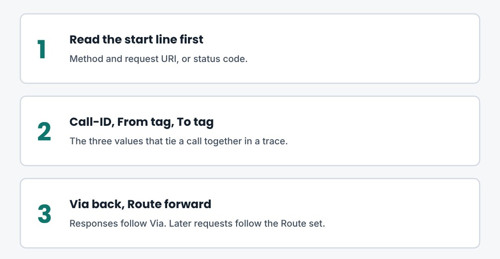
Start line, headers, body. Call-ID plus the two tags identify the dialog. Via brings the response back.
3. Responses, Transactions and Dialogs
The six response classes, how a transaction works, the timers behind retransmissions, and what a dialog is.
3.1Six classes of responses
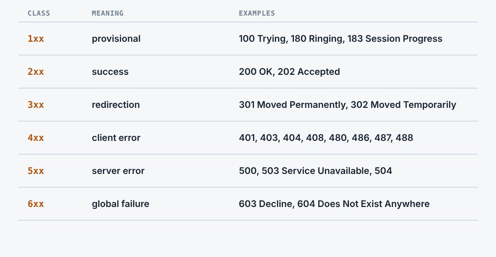
The first digit of the status code gives the class. 1xx responses are provisional: the request is in progress. All others are final and end the transaction. 2xx means success. 3xx redirects. 4xx is an error on the client side, 5xx on the server side, and 6xx a failure that no other server can fix.
3.2The codes you meet most
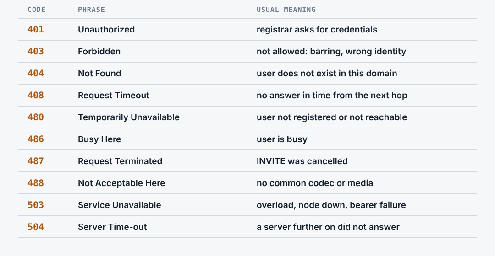
A small set of codes explains most failed calls. 401 and 407 are not errors but challenges. 486 means the user is busy and 480 that the user is not reachable. 487 is the normal answer to an INVITE that was cancelled. 488 points at the SDP, and 503 at an overloaded or broken server.
3.3The INVITE transaction
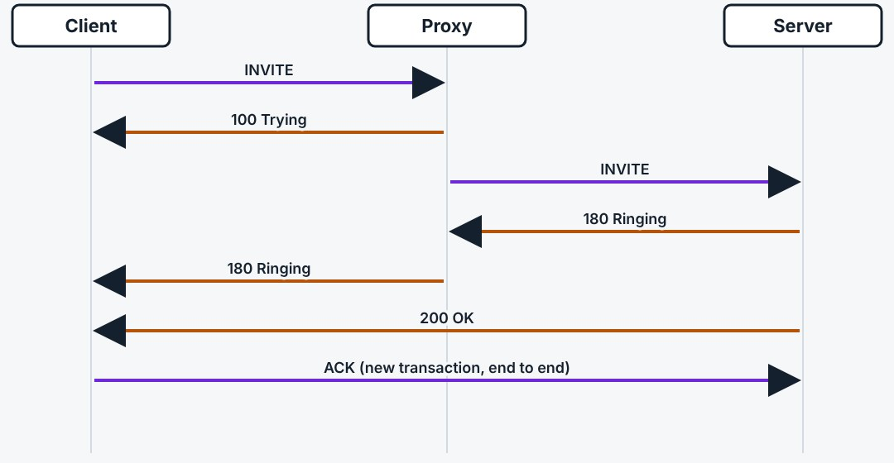
An INVITE can take a long time, because a human has to answer. It therefore gets a three-way handshake. The server sends 100 Trying at once to stop retransmissions. A final response is retransmitted until the ACK arrives. For a 2xx, the ACK is a separate transaction sent end to end.
3.4Non-INVITE transactions
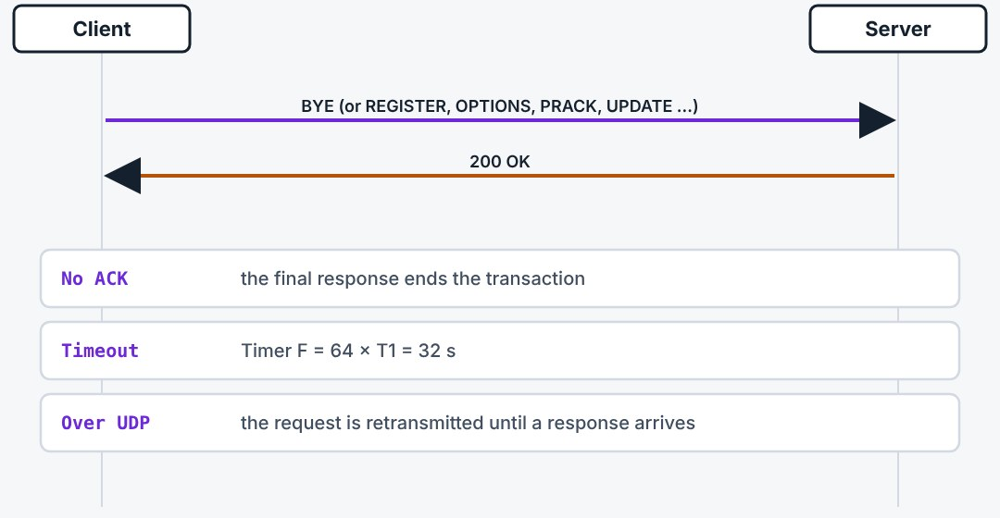
All other methods use a simple two-way exchange: one request, one final response, no ACK. They are expected to finish quickly. If no final response arrives within 32 seconds the transaction fails, and the client treats it like a 408.
3.5Timers and retransmission
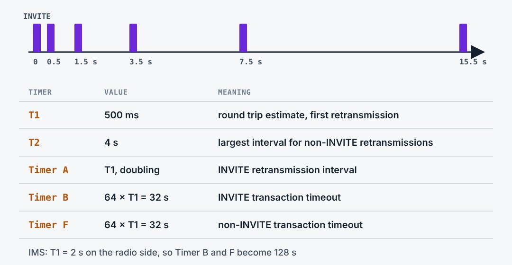
Over UDP, SIP must repeat messages itself. The basic timer T1 is 500 ms, an estimate of the round trip time. A request is retransmitted after T1, then after twice that, and so on. After 64 times T1, which is 32 seconds, the transaction gives up. Mobile networks often use longer values.
3.6What a dialog is
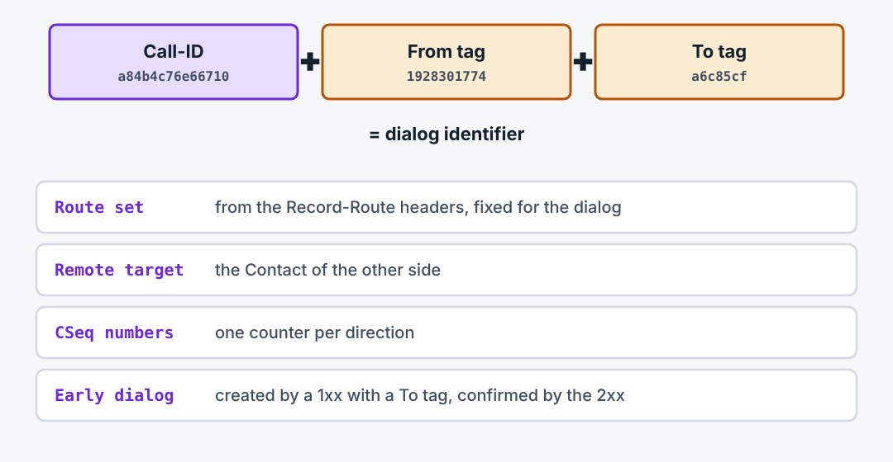
A dialog is the lasting relation between two user agents, for example for the length of a call. It is identified by three values: the Call-ID, the local tag and the remote tag. It also stores the route set, the remote target and the sequence numbers. INVITE and SUBSCRIBE create dialogs.
3.7Transactions inside a dialog
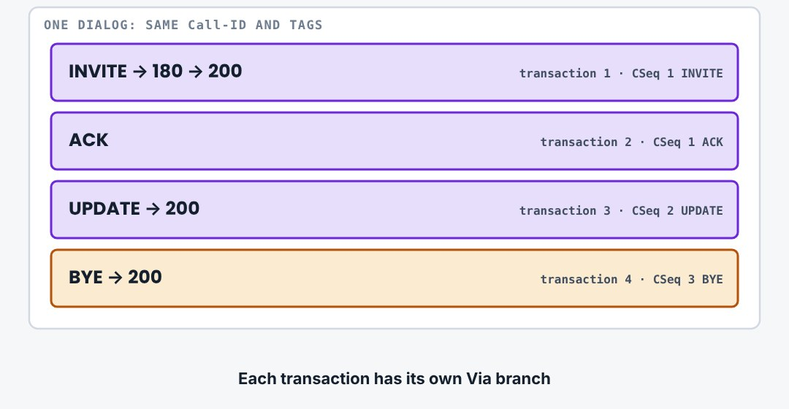
A call is one dialog made of several transactions. The INVITE transaction creates it. The ACK is its own transaction. Later a re-INVITE or UPDATE may change the session. The BYE transaction ends the dialog. All of them share the Call-ID and the tags, and each has its own branch and CSeq.
3.8Three things to remember
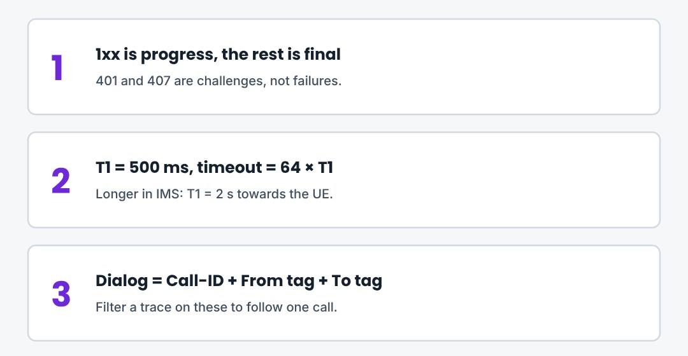
The first digit of the code tells the story. INVITE has a three-way handshake, everything else two. A dialog is Call-ID plus two tags.
4. The Basic Call Flow
A complete call from INVITE to BYE, and the variations: cancel, busy, reliable provisional responses and re-INVITE.
4.1A successful call
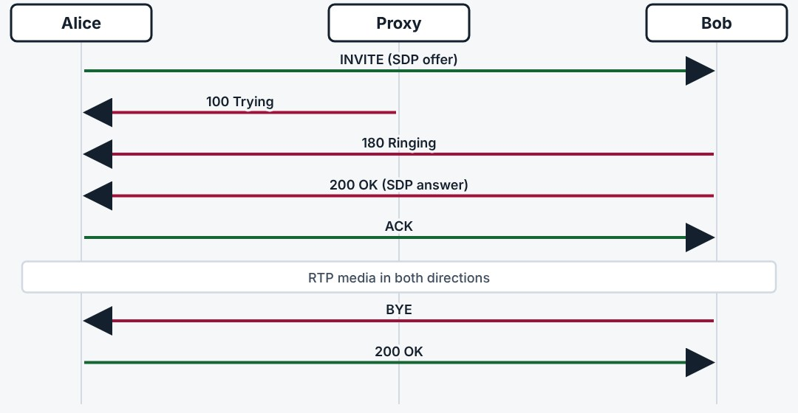
This is the flow behind every call. The INVITE carries the SDP offer. 100 Trying stops retransmissions, 180 Ringing tells the caller that the phone rings. The 200 OK carries the SDP answer when the user picks up. The ACK completes the setup, the media flows, and a BYE from either side ends it.
4.2The caller gives up: CANCEL
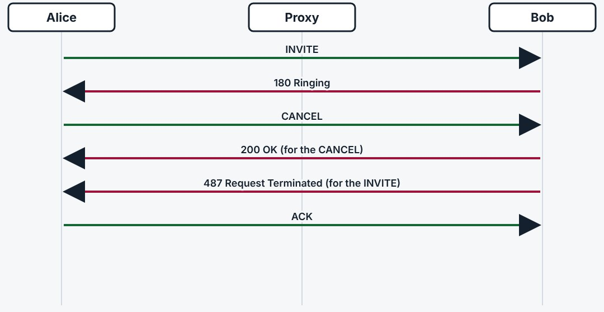
If the caller hangs up while it still rings, it sends CANCEL. CANCEL is answered hop by hop with 200 OK. The called side then ends the original INVITE with 487 Request Terminated, which the caller acknowledges. CANCEL only works before a final response. After the answer, a BYE is needed.
4.3The call is rejected
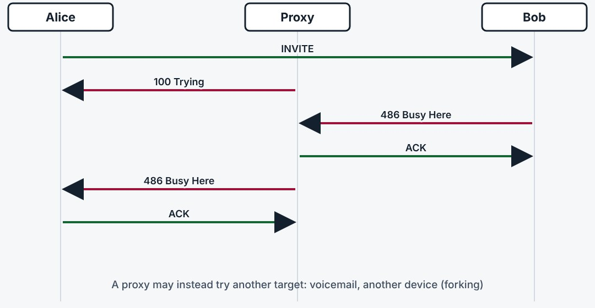
When the called party is busy or declines, the INVITE gets a final error response. A final response to INVITE is always acknowledged with ACK, also when it is an error. For non-2xx responses the ACK is part of the same transaction and is sent hop by hop.
4.4Reliable provisional responses
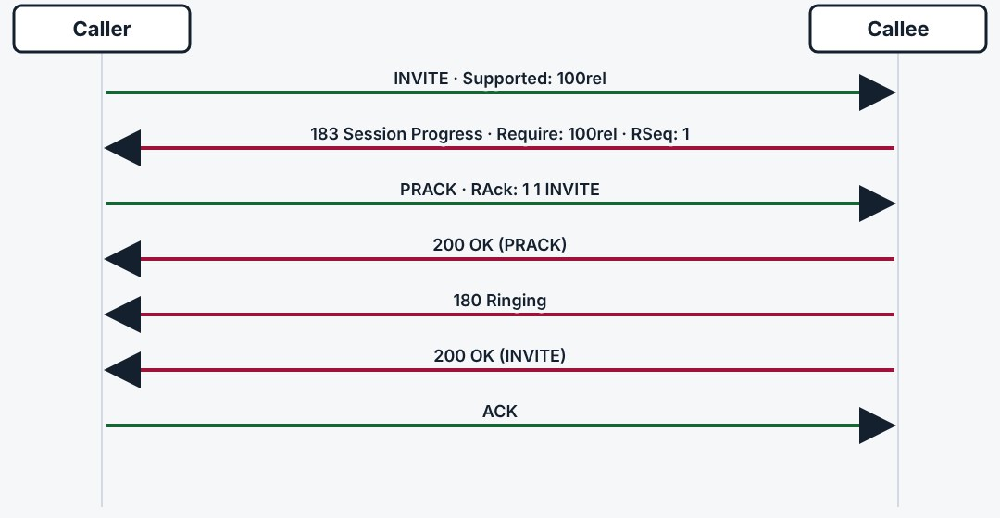
Normal 1xx responses can get lost. When a 183 carries SDP that the caller must receive, it is sent reliably. The response carries Require: 100rel and an RSeq number. The caller confirms it with PRACK, which itself gets a 200 OK. VoLTE uses this in every call.
4.5Changing a call: re-INVITE and UPDATE
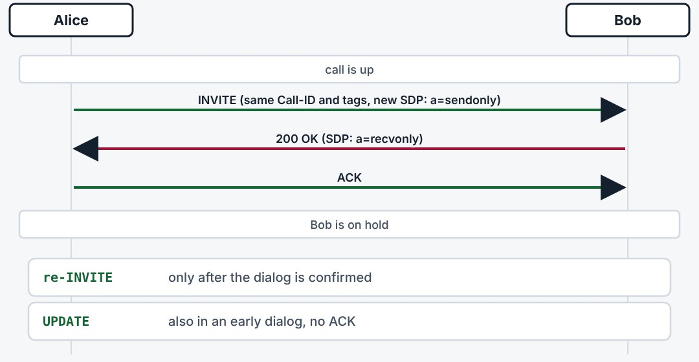
A session can change while it runs: hold, resume, add video, change codec. A re-INVITE is an INVITE inside the existing dialog with a new SDP offer. UPDATE does the same but can also be used before the call is answered, which is why VoLTE uses it during setup.
4.6Forking
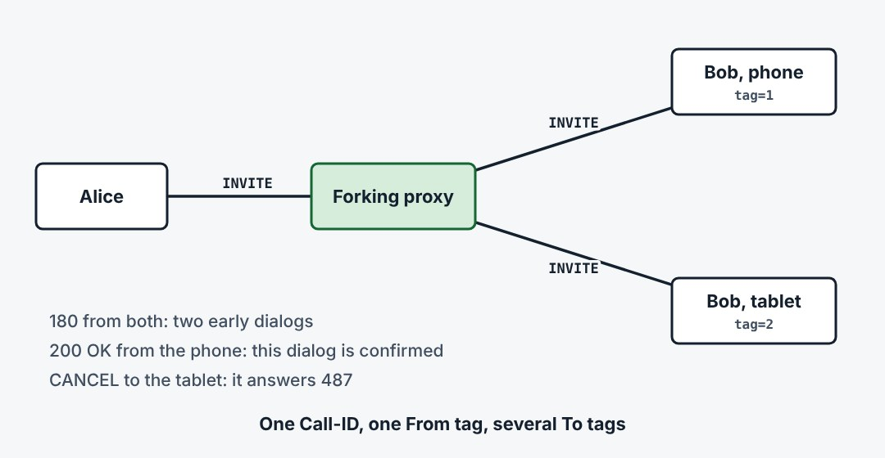
A user may be registered on several devices. A forking proxy sends the INVITE to all of them, in parallel or one after the other. Each device answers with its own To tag, so the caller sees several early dialogs. The first 200 OK wins, and the proxy cancels the other branches.
4.7Session timers
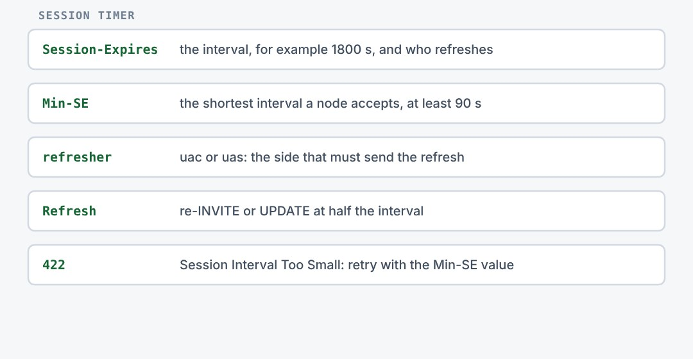
A proxy cannot know whether a call is still alive if the BYE is lost. Session timers solve this. The endpoints agree on an interval in the Session-Expires header, and one of them refreshes the session with a re-INVITE or UPDATE before it runs out. Without a refresh the session is considered dead.
4.8Three things to remember
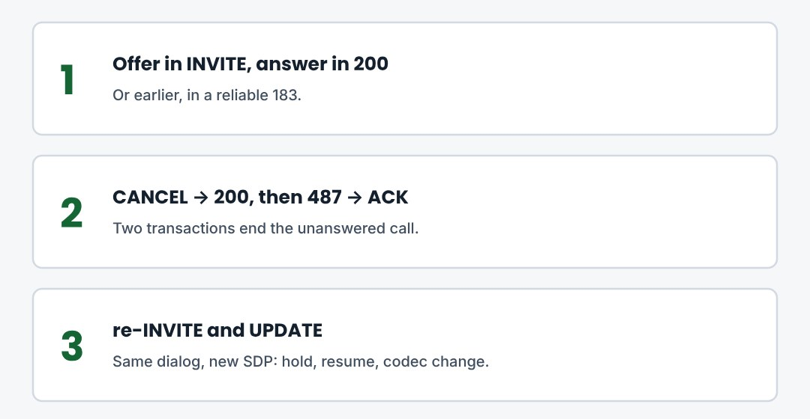
INVITE, 180, 200, ACK, then BYE. CANCEL before the answer, BYE after it. Every final response to INVITE gets an ACK.
5. SDP and Offer/Answer
How two endpoints agree on codecs, addresses and ports, and how to read the SDP in a trace.
5.1What SDP describes
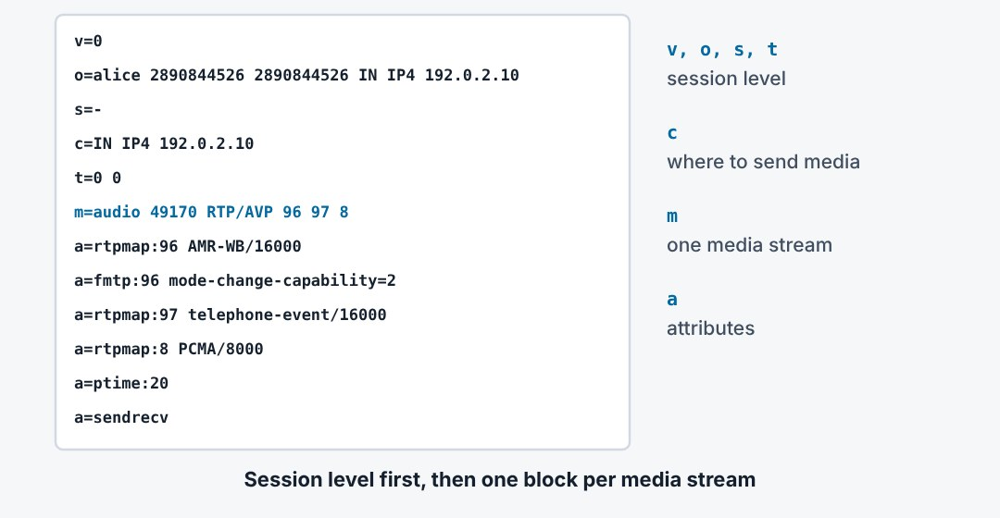
SDP is a description, not a protocol. It lists the media streams of a session: the type, the transport address where the sender wants to receive, and the formats it supports. Each line is one letter, an equals sign and a value. The order of the lines is fixed.
5.2The lines that matter
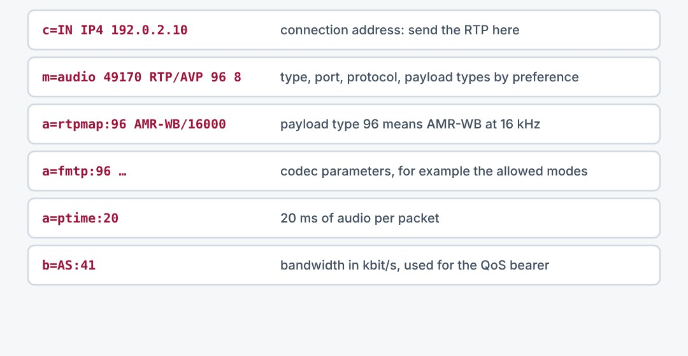
A few lines carry almost everything you need in a trace. The c line gives the IP address for media. The m line gives the media type, the port and the list of payload types in order of preference. The rtpmap attributes translate dynamic payload types into codec names.
5.3Offer and answer
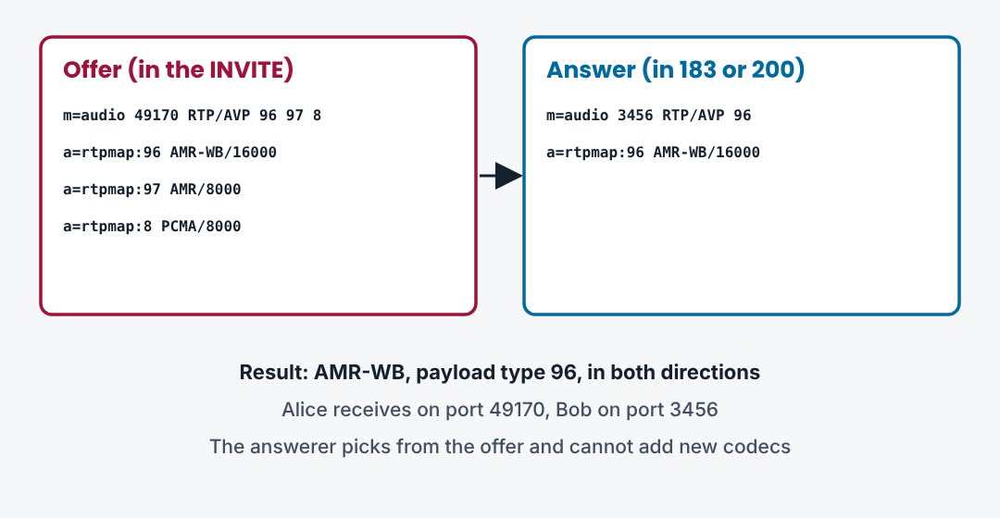
One side sends an offer with everything it supports. The other side answers with the subset it accepts, keeping the same number of media lines in the same order. After the answer both know which codec to send and where. A stream is refused by setting its port to zero.
5.4Where offer and answer can travel
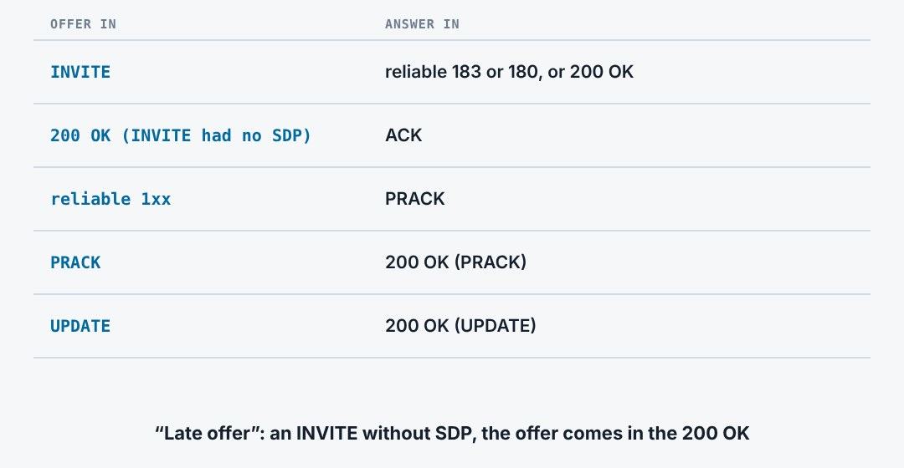
The offer does not have to be in the INVITE. Several combinations are allowed, as long as each offer gets exactly one answer before the next offer. VoLTE uses the first and, for the second round with the preconditions, PRACK or UPDATE.
5.5Direction attributes and hold
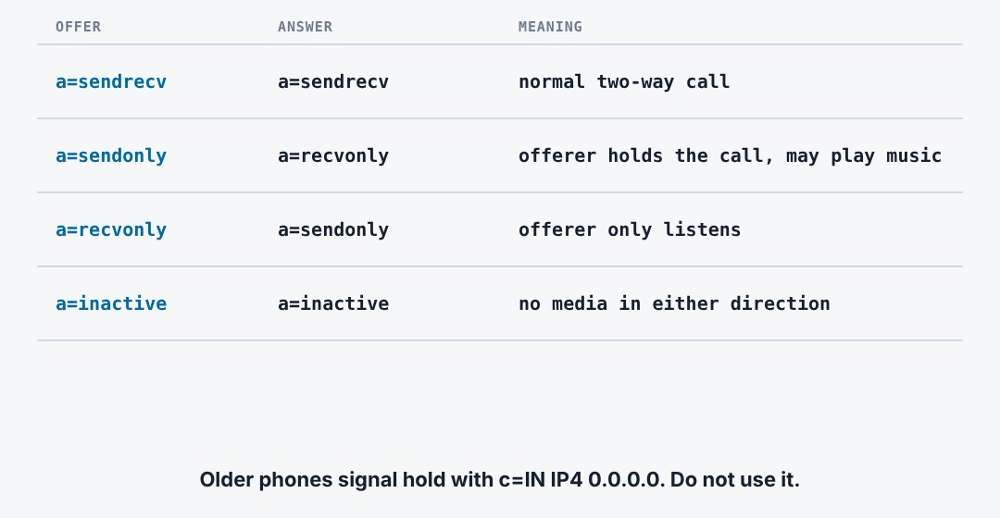
Four attributes set the direction of a stream. The default is sendrecv. To put a call on hold, the holding side offers sendonly, and the other side answers recvonly. inactive stops both directions. The same attributes switch early media on and off.
5.6Preconditions
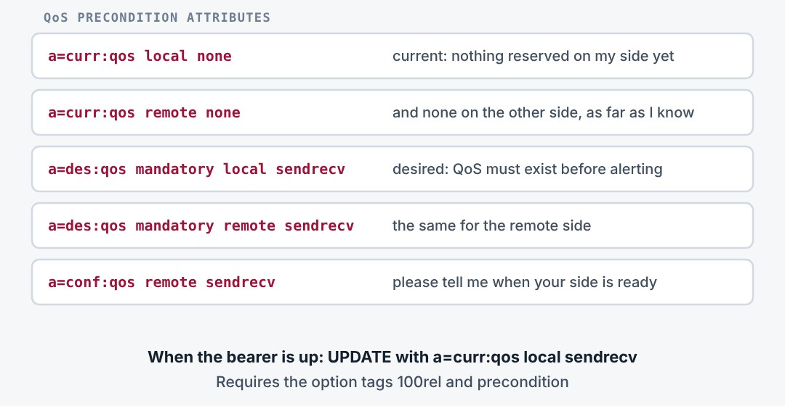
In a mobile network the phone should not ring before the voice bearer exists. Preconditions solve this. Both sides state in SDP that QoS is required and whether they have it yet. The called phone only starts ringing when both sides have confirmed their resources.
5.7Codecs in mobile voice
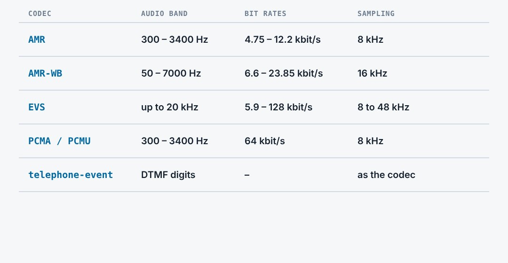
The codec decides the quality and the bit rate. AMR is the narrowband codec inherited from 3G. AMR-WB doubles the audio bandwidth and is known as HD voice. EVS goes further and is more robust to packet loss. DTMF tones are sent as telephone-event packets, not as audio.
5.8Three things to remember
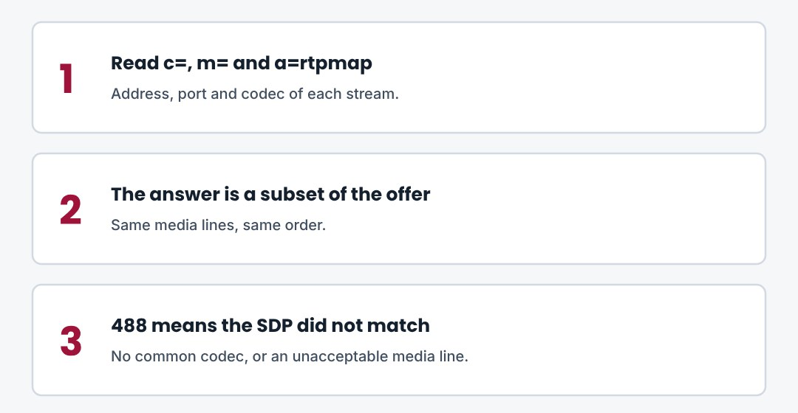
SDP says where and how to send media. One offer, one answer. Direction attributes handle hold, preconditions hold back the ringing.
6. RTP and RTCP
How the voice travels: the RTP header, payload types, jitter, and the quality reports of RTCP.
6.1Media runs beside the signalling
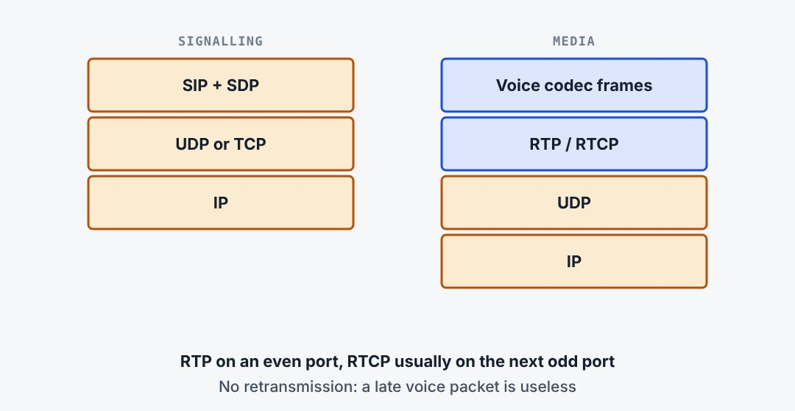
Once SDP has been exchanged, the endpoints send media as RTP over UDP to the address and port from the SDP. RTP adds what UDP lacks for real-time media: a sequence number, a timestamp and a source identifier. RTCP runs next to it and reports on quality.
6.2The RTP header
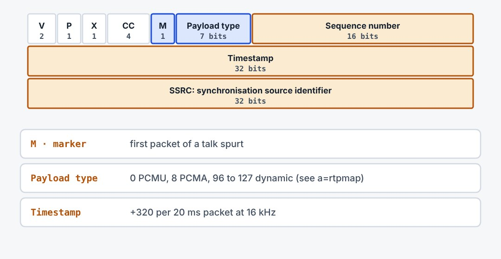
The fixed RTP header is 12 bytes. The payload type says which codec the packet carries. The sequence number rises by one per packet and reveals loss and reordering. The timestamp counts sampling instants and lets the receiver play the audio at the right time. The SSRC names the source.
6.3Packets on the wire
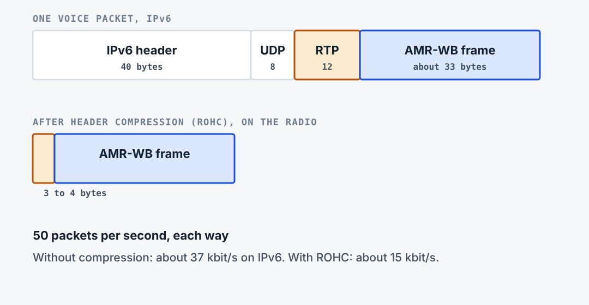
A voice call sends one packet every 20 ms in each direction. With AMR-WB at 12.65 kbit/s the payload is about 33 bytes. The headers of IP, UDP and RTP add 40 bytes with IPv4 or 60 with IPv6, more than the voice itself. This is why VoLTE compresses the headers on the radio.
6.4Jitter and the playout buffer
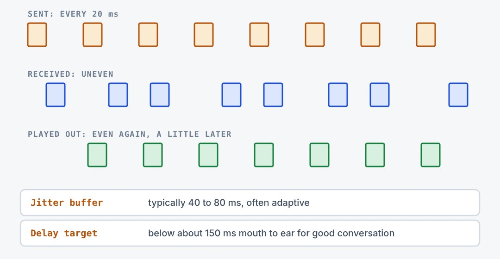
Packets leave every 20 ms but do not arrive every 20 ms. The variation is jitter. The receiver holds packets in a small buffer and plays them out at a steady pace. A bigger buffer hides more jitter but adds delay. Packets that come too late are dropped and concealed by the codec.
6.5RTCP: the feedback channel
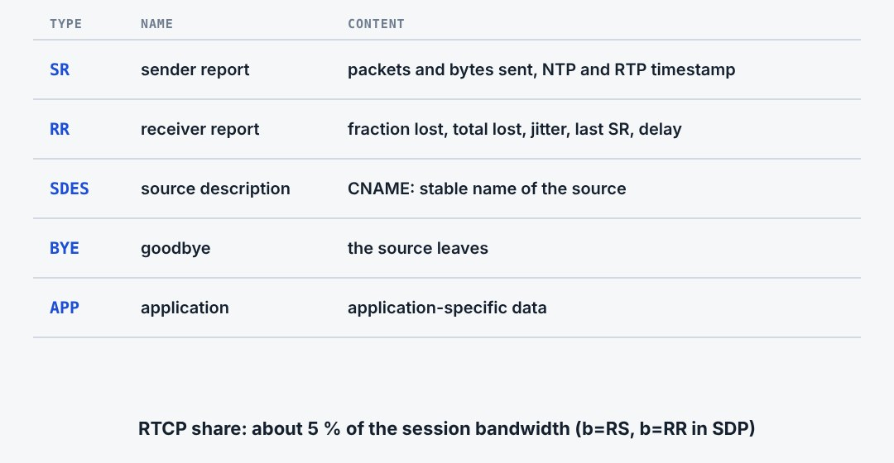
RTCP packets travel alongside RTP every few seconds. A sender report gives the packet and byte counts and links the RTP timestamp to wall clock time. A receiver report tells the sender how its stream arrived: fraction lost, cumulative loss, jitter and the round trip time data.
6.6DTMF
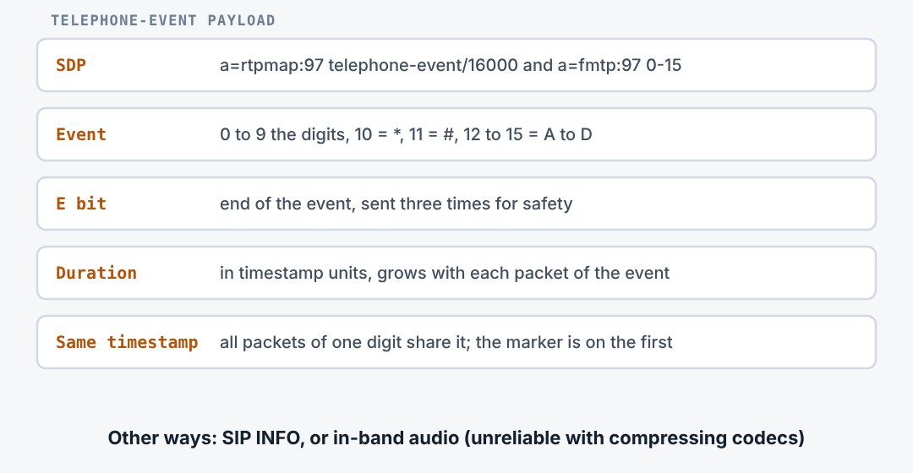
When you press a key during a call, the digit is not sent as an audible tone inside the codec. It is sent as a telephone-event: special RTP packets with their own payload type that name the digit, its volume and its duration. The last packet is sent three times with the end bit set.
6.7What bad voice looks like in a trace
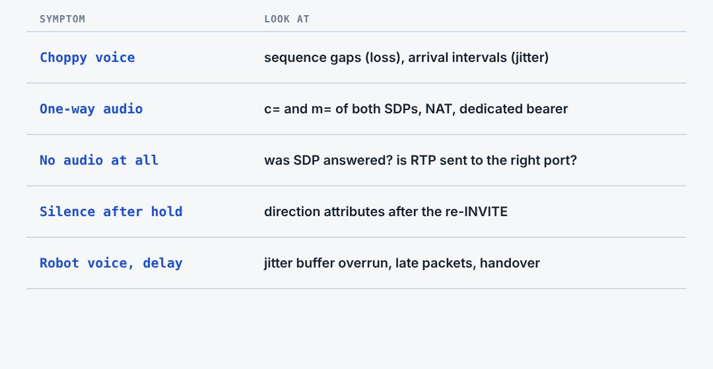
Voice problems show in the RTP stream. Gaps in the sequence numbers mean loss. A changing interval between arrivals means jitter. One-way audio usually means the SDP gave a wrong address or a bearer or firewall blocks one direction. No RTP at all after the 200 OK points to SDP or the bearer.
6.8Three things to remember
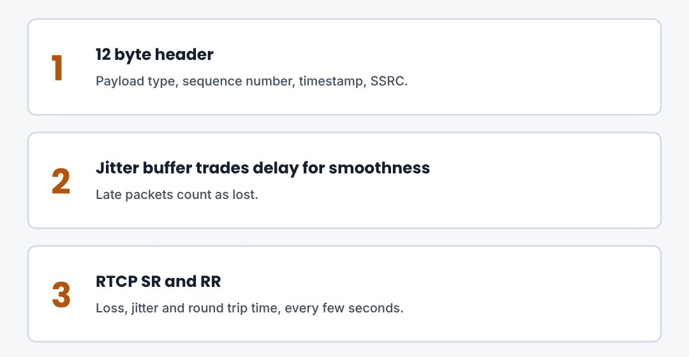
RTP over UDP, one packet per 20 ms. Sequence number for loss, timestamp for timing. RTCP reports the quality.
7. Registration and Authentication
How a user agent tells the network where it is, and how the network checks who it is.
7.1Why register
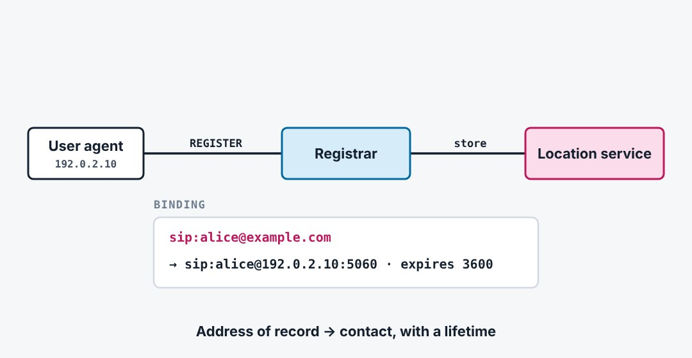
Calls are addressed to a stable name, but the device moves and its IP address changes. REGISTER tells the registrar: requests for this address of record should go to this contact, for this long. The proxy looks up that binding whenever a call arrives for the user.
7.2The REGISTER request
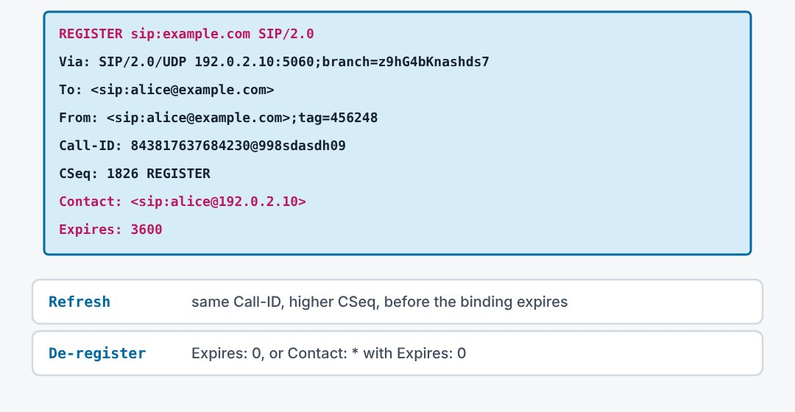
In a REGISTER the request URI names the domain, not a user. To holds the address of record being registered, From says who registers, and they are usually the same. Contact carries the device address and Expires the lifetime. Call-ID stays the same for all refreshes and CSeq goes up.
7.3Digest authentication
The registrar must be sure who is registering. With digest authentication it answers the first REGISTER with 401 and a random nonce. The client sends the request again with a response computed from the user name, the password, the nonce and the request. The password itself never crosses the network.
7.4What the 200 OK tells you
The final 200 OK lists the bindings that now exist and how long each lasts. The registrar may shorten the requested time. In IMS the answer carries more: the route to use for later requests and all public identities that were registered together.
7.5Registration state: the reg event
A device and the network both need to know when the registration changes, for example when the network removes it. The user agent subscribes to the reg event package. The registrar sends a NOTIFY with an XML document each time the state changes. In IMS the UE and the P-CSCF both subscribe.
7.6Keeping the registration alive
A registration is soft state. The device must refresh it before it expires, usually at about half the lifetime. In IMS the typical lifetime is 600 000 seconds, and the UE re-registers 600 seconds before expiry or when its IP address or access network changes.
7.7When registration fails
A failed registration means no calls at all, so it is the first thing to check. The response code narrows it down quickly. 401 in a loop is a credential problem. 403 is a subscription or roaming problem. 404 says the user is unknown. Timeouts point at the network path or at the P-CSCF address.
7.8Three things to remember
REGISTER binds the public name to the device. 401 is the normal first answer. The registration is soft state and must be refreshed.
8. IMS Architecture
The IP Multimedia Subsystem: the three call session control functions, the HSS, application servers and the border to other networks.
8.1What IMS is
IMS is the 3GPP framework that delivers voice, video and messaging over IP. It is a set of SIP servers with defined roles, a subscriber database and application servers. It sits on top of any IP access: LTE, 5G or Wi-Fi. VoLTE, VoNR and VoWiFi are all IMS services.
8.2The three CSCFs
SIP signalling passes through three kinds of call session control functions. The proxy CSCF is the first contact point of the UE. The interrogating CSCF is the entry point of the home network and finds the right serving CSCF. The serving CSCF is the registrar and controls the session.
8.3The complete picture
Around the CSCFs sit the supporting functions. The HSS holds the subscriber profile. Application servers provide the services. The MGCF and the media gateway connect to the circuit-switched telephone network. The IBCF is the border towards other IP networks.
8.4Interfaces and protocols
IMS has two families of interfaces. Everything that carries call signalling uses SIP. Everything that reads or writes subscriber data or policy uses Diameter. Knowing the letters lets you place a trace in the architecture at once.
8.5Identities
An IMS user has one private identity and one or more public identities. The private identity is for authentication only and looks like a user name. The public identities are what other people dial: a SIP URI and usually a tel URI. They are stored on the ISIM, or derived from the IMSI when there is only a USIM.
8.6Service profile and filter criteria
The HSS stores a service profile for each user. Its core is a list of initial filter criteria. Each one says: if a request matches this trigger, send it to this application server. The S-CSCF downloads the list at registration and walks through it in priority order for every initial request.
8.7The border elements
Networks do not expose their IMS core directly. Towards the UE, the P-CSCF is often combined with an access gateway into a session border controller. Towards other operators the IBCF and the TrGW do the same job. Towards the telephone network the MGCF translates SIP into ISUP and the media gateway converts the voice.
8.8Three things to remember
P-CSCF at the edge, I-CSCF at the door of the home network, S-CSCF in control. SIP for sessions, Diameter for data. Services live in application servers.
9. IMS Registration
From finding the P-CSCF to the second REGISTER: the complete IMS registration with AKA and IPsec.
9.1Before the first REGISTER
IMS registration needs IP connectivity first. The UE attaches, activates a default bearer on the IMS APN with QCI 5 and receives its IP address. In the same step it learns the address of the P-CSCF, usually from the protocol configuration options of the bearer activation.
9.2The first REGISTER
The UE sends an unprotected REGISTER. The P-CSCF adds a Path header and forwards it to the I-CSCF of the home network. The I-CSCF asks the HSS which S-CSCF to use. The S-CSCF fetches an authentication vector and answers 401 with the challenge.
9.3IMS AKA
IMS reuses the AKA method of the radio network. The ISIM checks AUTN, so the UE authenticates the network. It computes RES and the keys CK and IK. The RES goes into the second REGISTER as the digest response. The S-CSCF compares it with the expected value from the HSS.
9.4IPsec between UE and P-CSCF
The first REGISTER and the 401 also negotiate security. The UE offers algorithms and ports in Security-Client, the P-CSCF answers in Security-Server. With CK and IK both sides set up two pairs of IPsec ESP associations. From the second REGISTER on, all signalling runs inside them on the protected ports.
9.5The second REGISTER
The UE repeats the REGISTER, now protected and with the AKA response. The S-CSCF verifies it, tells the HSS that it now serves this user, and downloads the service profile. The 200 OK returns the Service-Route and the associated identities. The UE is registered.
9.6The Diameter messages on Cx
Three request and answer pairs on the Cx interface run the registration. They are worth knowing by name, because a failed registration often shows its real cause in the Diameter result code and not in the SIP response.
9.7What follows registration
Registration triggers three more things. The S-CSCF performs a third-party registration towards the application servers named in the filter criteria. The UE and the P-CSCF subscribe to the registration state. And the phone shows the VoLTE symbol, because it can now make and receive calls.
9.8Three things to remember
Two REGISTERs: the first is challenged, the second is protected. AKA gives authentication and the IPsec keys. Cx is where the HSS takes part.
10. The VoLTE Call Flow
A complete IMS voice call: the signalling path, preconditions, the dedicated bearer and release.
10.1The signalling path
A call between two VoLTE users crosses both IMS networks. On the originating side the request passes the P-CSCF and the S-CSCF, which involves the telephony application server. The terminating network is entered through its I-CSCF, which finds the S-CSCF of the called user, and from there the request goes to the P-CSCF and the UE.
10.2INVITE and 183: the SDP exchange
The INVITE carries the SDP offer with the codecs and the precondition lines, which say that no resources are reserved yet. The called UE answers with a reliable 183 Session Progress containing the SDP answer. It does not ring yet. The caller acknowledges the 183 with PRACK.
10.3The network sets up the voice bearer
The SDP answer tells each P-CSCF which media will flow. It sends this to the PCRF over Rx. The PCRF turns it into a rule and the P-GW creates a dedicated bearer with QCI 1 and a guaranteed bit rate. This happens on both sides independently, each for its own UE.
10.4UPDATE, ringing and answer
When its bearer is up, UE A sends UPDATE with the precondition now met on its side. UE B answers when its own bearer is ready too. Only now does UE B ring and send 180. When the user answers, the 200 OK and the ACK complete the call.
10.5The whole flow on one page
Put together, a VoLTE call setup has five phases. Offer, answer, resource reservation, alerting and connect. It is longer than the basic SIP flow because the network guarantees that the voice bearer exists before the phone rings.
10.6Headers to check in a VoLTE INVITE
An IMS INVITE carries headers a plain SIP call does not have. They explain most interoperability problems. The identity headers say who is calling. The feature tags say that this is a telephony session. The Supported and Require headers show which extensions each side uses.
10.7Releasing the call
Either side ends the call with BYE. Each P-CSCF then tells the PCRF that the media is gone, and the network deletes the dedicated bearer. The default bearer with QCI 5 stays, and so does the registration. If the radio connection is lost instead, the network releases the session after the bearer loss is reported.
10.8Three things to remember
The SDP answer comes in the 183, not in the 200. The bearer is created by the network from the SDP. Ringing waits for both bearers.
11. IMS Services
What runs on top of the IMS core: supplementary services, SMS, emergency calls, video and calls to other networks.
11.1Supplementary services (MMTel)
The telephony application server provides the services users know from the old telephone network. They are standardised as multimedia telephony. The user changes the settings, for example a forwarding number, over the Ut interface with XCAP, or with star codes sent as SIP.
11.2Call forwarding in a trace
Call forwarding is done by the TAS of the called user. It answers the caller with 181 Call Is Being Forwarded and sends a new INVITE to the forwarding target. The History-Info header records the original target and the reason, so the final recipient can see who was called first.
11.3SMS over IP
An SMS can travel as a SIP MESSAGE. The body is the same binary short message as in 2G and 3G, with content type application/vnd.3gpp.sms. An IP short message gateway connects the IMS to the SMS centre. The delivery report comes back as a second MESSAGE.
11.4Emergency calls
An emergency call must work without a normal registration and must reach the right emergency centre. The UE sets up an emergency bearer and performs an emergency registration. The P-CSCF recognises the emergency number and sends the INVITE to the E-CSCF, which uses the location to pick the public safety answering point.
11.5Video calls
A video call is a voice call with a second media line. The SDP offers audio and video, each with its own port and codec. The network creates two dedicated bearers: QCI 1 for the voice and QCI 2 for the video. Video can be added to or removed from a running call with a re-INVITE.
11.6Calls to the telephone network
When the called number is not an IMS user, the S-CSCF hands the request to the BGCF. It chooses a media gateway control function, which translates SIP into the ISUP signalling of the circuit-switched network. The media gateway converts RTP into a 64 kbit/s channel and transcodes the voice if needed.
11.7Roaming and interconnect
Between operators, IMS traffic passes interconnection border functions on both sides, usually over an IP exchange network. For VoLTE roaming two models exist. With local breakout the P-CSCF is in the visited network. With S8 home routing everything, including the P-CSCF, stays in the home network.
11.8Three things to remember
Services live in the application servers. The same SIP methods carry calls, messages and service control. Border functions connect IMS to everything else.
12. Transport, Security, NAT and Troubleshooting
What carries SIP, how it is protected, why NAT causes trouble, and a method for reading a trace.
12.1Transport: UDP, TCP, TLS
SIP runs over UDP or TCP on port 5060, and over TLS on port 5061. UDP is simple, but SIP must then retransmit by itself, and large messages get fragmented. A message close to the path MTU must therefore be sent over TCP. IMS messages are long, so VoLTE phones switch between UDP and TCP all the time.
12.2Security in layers
SIP security is built from several pieces. Digest or AKA authenticates the user. TLS or IPsec protects the signalling hop by hop. SRTP protects the media. Inside an operator network the nodes trust each other, and the P-Asserted-Identity header carries the verified identity across that trust domain.
12.3Why NAT breaks SIP
A device behind a NAT writes its private address into Via, Contact and the SDP. The other side cannot reach that address. Signalling answers and incoming calls get lost, and the media flows one way or not at all. The NAT also forgets the mapping after a short idle time.
12.4Session border controllers
In practice the border controller solves most of these problems. It is a back-to-back user agent at the edge of the network. It ends the signalling and the media on one side and starts them again on the other. That lets it fix addresses, hide the topology, enforce policy and transcode.
12.5Reading a trace: where to start
A method saves time. Start with the registration, because nothing works without it. Then filter on one Call-ID and read the start lines in order. Find the first message that is not the expected one. Then check the bearer and the media before you go deeper into the headers.
12.6Failure patterns
Most call failures fall into a few patterns. The response code together with the node that sent it tells you where to look next. The Reason and Warning headers often carry the precise cause, including the Q.850 cause from the circuit-switched side.
12.7Timers worth knowing
Many releases in a trace are caused by timers. If you know their values you can tell an expected timeout from a fault. The SIP transaction timers are longer in IMS. On top come the session timer, the registration lifetime and, in the UE, the timer that waits for the voice bearer.
12.8Three things to remember
UDP for small messages, TCP for large ones. NAT and borders rewrite addresses. In a trace, find the first unexpected message.